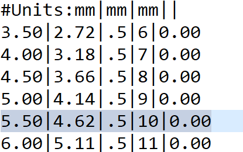

|
|
|


几何标准
此列表中大多数标准也提供完整的标准和优先序列。使用数据库工具（参见"数据库工具与外部表格"章）将您自己的标准添加到列表中或扩展现有准则。例如，DIN 5480 优先序列存储在 文件中，该文件位于 文件夹内（您的 KISSsoft 安装目录）。每一行对应 列表中的一个条目，并使用以下语法：
| da1 | da2 | mn | z | x* |
其中
| da1 | 齿顶圆直径，轴 |
| da2 | 齿顶圆直径，轮毂 |
| mn | 法向模数 |
| z | 齿数 |
| x* | 变位系数 轴 |
示例：

图 38.1：M02C- 001.dat 中的示例条目
图中所选条目（见图 38.1）代表 da1 = 5.5mm、da2 = 4.62mm、mn = 0.5mm、z = 10 以及 x* = 0。
注意
只有先在几何标准的下拉列表中选择 ，才能编辑法向模数、齿数和变位系数输入字段。
Geometry standards
The complete standard and preference sequences are also available for most of the standards in this list. Use the database tool (see chapter Database Tool and External Tables) to add your own standards to the list or extend existing guidelines. For example, the DIN 5480 preference sequence is stored in the file in the folder in your KISSsoft installation directory. Each line corresponds to an entry in the list and uses the following syntax:
| da1 | da2 | mn | z | x* |
where
| da1 | Tip diameter, shaft |
| da2 | Tip diameter, hub |
| mn | Normal module |
| z | Number of teeth |
| x* | Profile shift coefficient shaft |
Example:
Figure 38.1: Example entry in M02C- 001.dat
The selected entry in Figure (see Figure 38.1) stands for da1 = 5.5mm, da2 = 4.62mm, mn = 0.5mm, z = 10 and x* = 0.
Note
You can only edit the Normal module, Number of teeth and Profile shift coefficient input fields if you first select in the drop-down list for geometry standards.